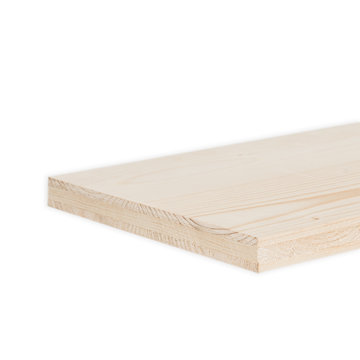
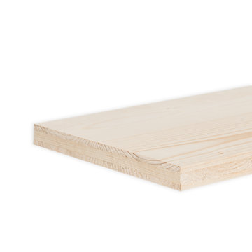
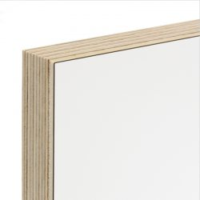

Welke materialen gebruiken we?
Het aanbod aan hout en andere materialen om meubels uit te vervaardigen is quasi oneindig. Bij Timmerwerkt worden de volgende materialen frequent gebruikt en op voorraad gehouden, zodat we aan een voordelige prijs kunnen aankopen én de overschotten beperken. Waar mogelijk kiezen we er steeds voor om FSC of PEFC gelabeld materiaal te gebruiken; tropische houtsoorten verwerken we liever niet.
Voor meer info kan je terecht op VIBE.

Binderholz
De Binderholz plaat is ontwikkeld voor hoogwaardige toepassingen in interieurprojecten en meubelvervaardiging. De milieuvriendelijke 3-lagige verlijming garandeert alle goede eigenschappen van massief hout met als bijkomend voordeel een steviger en duurzamer product. De productie is conform het PEFC-label voor verantwoord bosbeheer. Binderholz wordt vernist of gebeitst.
 

Multiplex
Multiplexplaten zijn samengesteld uit drie of meer (altijd oneven aantal) op elkaar gelijmde lagen, waarvan de vezelrichtingen van de opeenvolgende lagen gewoonlijk loodrecht op elkaar staan. Dit resulteert in een product met alle unieke eigenschappen van hout, maar met grotere stabiliteit en grotere afmetingen. Wij werken met Europese houtsoorten afkomstig uit productiebossen, die na houtkap opnieuw worden aangeplant – Berk, Grenen en Populier. Multiplex wordt vernist of beplakt met laminaat.


MDF
MEDITE MDF is een MDF-plaat voor algemene doeleinden en geschikt voor de meeste toepassingen. Dit plaatmateriaal wordt gemaakt van minderwaardige houtkwaliteiten die worden verpulverd tot ‘houtstof’. Onder hoge druk en bij een hoge temperatuur wordt dit samengeperst tot een plaat waarbij de natuurlijke bindmiddelen van het hout als natuurlijke ‘lijm’ dienen. De platen die wij courant gebruiken zijn voor 70-80% FSC gelabeld. Op verzoek kan ook de formaldehydevrije variant gebruikt worden, maar die is moeilijker te behandelen. MDF wordt typisch vernist of geverfd.
OSB
Eigenlijk een constructieplaat en daarom vrij goedkoop, maar kan ook perfect gebruikt worden om meubels uit te maken. Smartply OSB is vervaardigd uit FSC-gelabelde houtvezels (FSC mixed sources) en formaldehydevrij verlijmd.
Rubberwood
Van de rubberboom wordt natuurlatex afgetapt. Als de latexproductie stopt, wordt het hout van de boom benut voor het vervaardigen van massieve meubelplaten. Dit is een vorm van recuperatie van de boom na een leven als latexdonor. Rubberwood wordt vernist, gebeitst of geolied.

Fineer
Fineer is fijn hout dat van een boomstam wordt versneden tot zeer dunne vellen. Zo’n fineervel is gemiddeld tussen de 0,5 en 2 millimeter dik, en wordt verlijmd op een drager zoals MDF. Door de boomstam in vellen te versnijden, haal je meer waarde uit hetzelfde materiaal. We verkiezen het gebruik van Europese houtsoorten met FSC/PEFC label. Aangezien er zo veel soorten bestaan, is fineer steeds op bestelling. Gefineerde platen worden vernist.
Laminaat
Laminaat bestaat uit meerdere lagen papier die vermengd worden met kunsthars en onder hoge druk en bij hoge temperaturen samengeperst. Laminaat is gemiddeld 0,8 mm dik. Laminaat verlijmen we zelf op multiplex of MDF, en is in heel wat kleuren te verkrijgen. Wit laminaat is goedkoper dan gekleurd.
